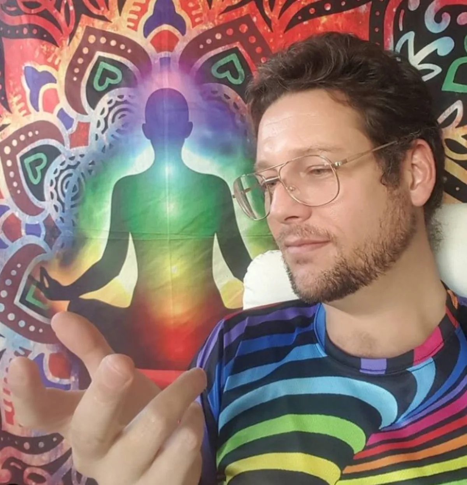

Luke Nathan Hayes / Aura of Intelligence
A Bridge to The Infinite
I wanted to build a digital bridge to my infinite self: one I could wear as a mixed-reality aura. What grew from that is a whole constellation of tools: an aura builder, an avatar, a mind palace, a world to build in, and a lot more besides. All of it is for you too, whoever you are, however comfortable you are with technology. You own your data. You choose what to wear.
A different way to make software
Build your own. Own it. Let it grow with you.
Almost all the software in your life is rented. You pay big tech month after month for tools built for everyone, which means built for no one in particular, and the day you stop paying, you are left with nothing. Aura of Intelligence is a different way. Instead of renting theirs, you build your own premium software stack: yours to keep, shaped to you, growing and changing as you do.
The pathways here are how you get there. Each one is a chance to stop and look at the software around you, what already exists, what does not yet, and what would genuinely serve your life, then build just the right thing at just the right time. No subscriptions. No handing over your data as the price of entry. Just tools that are truly yours, and a whole system held, in every part, to joyful responsible abundance.

The founder
Luke Nathan Hayes
"I wanted to build a digital bridge to my infinite self that I could wear as a mixed reality aura that imitates chakras."
This has been an evolving concept since my 2014 notebook sketches. I believe in infinite intelligence, and in the ability of a human being to create a computer-enabled, mixed reality light field interface with it. This whole site grew out of that one belief, and it has kept growing ever since.
I live on Minjerribah, North Stradbroke Island, on Quandamooka Country, where my day-to-day work is my market stall and workshop, Strange but True. I've spent time in numerous countries and religious temples along the way, Thailand, India and Nepal among them, including a visit to Lumbini in 2024 during a longer journey through India and Nepal from August 2023 to July 2024. If you'd like to back the work and the travels, that's what Right Place, Right Time is for.
Our promise
Good heart, clear conscience, honest motives.
We're committed to building a methodology and tools for people of good heart, clear conscience and honest motives, to build an AGI Aura of Intelligence within a Global Association for Joyful Responsible Abundance on Earth.
This site is being built in the open
More is arriving, page by page.
This is a full rebuild of a site that's carried two years of work without catching up to it. Rather than wait for a finished reveal, it's going live now and growing in public, the same way everything else here gets built.
Build log & todo
What's shipped, what's next, and what only Luke can decide. Dated, in public.
PatronageRight Place, Right Time
Back the mission: patronage and sponsorship for the whole body of work.
Musici C. infinity
The music universe: songs as emotional technology.
Live engineStrange but True
The market stall and mobile workshop where everything gets proven first.